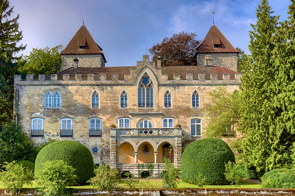

Nomen atque omen quantivis iam est preti [Name, wie Bedeutung, ist schon jeden Preis wert], besagt eine alte Redewendung (Plautus, Persa, 625), und so kann man fragen, was es wohl bedeute, wenn ein Ort seit dem 10. Jahrhundert «bei den Gott wohlgefälligen Leuten» genannt wird, also «Gotiliubon», heute Gottlieben. Diesen Namen belegt schon die zwischen 1134 und 1156 verfasste Chronik des Klosters Petershausen, die das von einer Edelfrau dem hl. Gebhard vermachte «prædium» (Gut) bei «Tegirwilare» (Tägerwilen) und «Gotiliubon» erwähnt. Am Anfang der Geschichte von Gottlieben stehen also in der Tat Gott wohlgefällige Leute. Und doch ist der Name heute nicht ganz frei von Ironie, denn in die Geschichte ist Gottlieben vor allem als Gefängnis der Diener Gottes eingegangen.
Schloss Gottlieben. (Bild: © 2016 Adobe Stock/groeche)
Bischofsburg
Mit rund 40 Hektaren und 300 Einwohnern eine der kleinsten Gemeinden der Schweiz, ist Gottlieben nur zwei Autostunden von Bern entfernt und liegt etwa 4 km westlich von Konstanz (D) / Kreuzlingen TG, am Ufer des Seerheins, der den Obersee mit dem Untersee verbindet. Im Hinblick auf die Wasserwege besitzt Gottlieben also von Natur aus eine strategisch günstige Lage. Diese Lage und die Streitigkeiten mit den Bürgern von Konstanz haben den Konstanzer Bischof Eberhard II. von Waldburg wohl dazu geführt, dass er sich im Jahre 1251 entschieden hat, hier eine Wasserburg zu bauen und eine Stadt zu gründen, die für eine kurze Zeit sogar durch eine Brücke mit dem anderen Ufer verbunden war. Gottlieben war also als Konkurrenz zu der abtrünnigen Stadt Konstanz geplant. Doch nachdem Bischof Eberhard II. den Streit mit den Konstanzer Bürgern gewonnen hatte, ist sein Interesse an Gottlieben verloren gegangen, und er liess die Brücke über den Seerhein abreissen. Gottlieben wurde also nie zu einer Stadt, die Burg ist aber für mehr als 500 Jahre eine Residenz der Konstanzer Bischöfe geworden.
Gefängnis
Bekannt wurde das Schloss Gottlieben allerdings vor allem als bischöfliches Gefängnis. Das bezeugt bereits eine der ältesten Darstellungen aus der eidgenössischen Chronik des Luzerners Diebold Schilling (1508), wo vier eingekerkerte Kleriker aus dem Gefängnis fliehen. In die europäische Geschichte ist Gottlieben dann dank dem Konstanzer Konzil (1414–1418) eingegangen, zumal hier vom März bis Juni 1415 der böhmische Reformator Jan Hus eingekerkert war, bevor er am 6. Juli 1415 in Konstanz als Ketzer verbrannt wurde. Dies beschreibt etwa 1417 der Bericht des Peter von Mladoniowitz: Als am Mittwoch vor dem Palmsonntag (24. März 1415) Papst Johannes XXIII. floh, und mit ihm auch die Wachen des Magisters Jan Hus, übergaben sie die Schlüssel von Hus’ Gefängnis König Sigismund, der sie an den Bischof von Konstanz weiterreichte. Dieser liess Hus noch in der Nacht auf seine Burg nach Gottlieben bringen, wo er in einem Turm «in Fesseln einhergehend» bis zu seiner Rückführung nach Konstanz eingekerkert war. Es ist eine Ironie der Geschichte, dass gerade der abgesetzte Papst Johannes XXIII., dessen Flucht aus Konstanz die Verlegung von Hus nach Gottlieben verursachte, dort am 3. Juni 1415 den anderen Johannes ablöste. Ein weiterer prominenter Gefangener war dann 1454 der Chorherr Felix Hemmerli aus Zürich. Dass hier auch Hieronymus von Prag festgehalten wurde († 30. Mai 1416, Konstanz), wie Ulrich von Richental in seiner Chronik erzählt, stimmt dagegen nicht. Die kirchengeschichtliche Bedeutsamkeit des Ortes ist also vor allem mit dem Namen seines Prager Universitätskollegen Jan Hus verbunden, der hier fast drei Monate in einem der Türme eingekerkert war. Der im Westturm erhaltene «Hus-Kerker» – ein hölzernes Blockgefängnis – soll daran erinnern (allerdings widerspricht diese Art des Kerkers dem Bericht des Peter von Mladoniowitz).
Pilgerort
Jedenfalls ist Gottlieben – ähnlich wie der Konstanzer «Hussenstein» (Husuv kámen) – zum wichtigen hussitischen Pilgerort geworden, wo des böhmischen Reformators gedacht wird, wie im letzten Jahr zu seinem 600. Todestag, in dem Gottlieben dank 30 Künstlerinnen und Künstlern eine Weile sogar den tschechischen Namen «Bohumilov» (= Gottlieben) trug. Die Türme mit dem Hus-Gefängnis sind im Grunde auch das Einzige, was aus dem mittelalterlichen Schloss Gottlieben erhalten blieb. Denn das Schloss wurde 1836 bis 1838 von der Familie Bonaparte, die bereits in dem nicht weit entfernten Schloss Arenenberg zuhause war, im grossen Stil umgebaut und erinnert seither an einen venezianischen Palazzo. Heute wird das Schloss von der Tochter der Schweizer Opernsängerin Lisa della Casa bewohnt und ist der Öffentlichkeit nicht zugänglich. Der Hus-Turm ist aber vom Wanderweg, wo auch eine Informationstafel mit der Geschichte des Schlosses steht, gut zu sehen. Ein Besuch in diesem kleinen «Gott lieben» Ort bei Konstanz, der in die europäische Geschichte eingegangen ist, lohnt sich aber auf jeden Fall – und das nicht nur für Hussiten.
Dr. Zbynek Kindschi Garsky ist Assistent am Institut für Bibelwissenschaft (Neues Testament) an der Theologischen Fakultät der Universität Bern.
Weitere Artikel von {{author.author}} finden Sie hier:
Zur Vertiefung:
- Dominik Gügel: Schloss Gottlieben – Festung, Palast, Kerker, in: Silvia Volkart (Hg.), Rom am Bodensee: Die Zeit des Konstanzer Konzils (Der Thurgau im späten Mittelalter 1), Zürich 2014, 131–134.
- www.gottlieben.ch